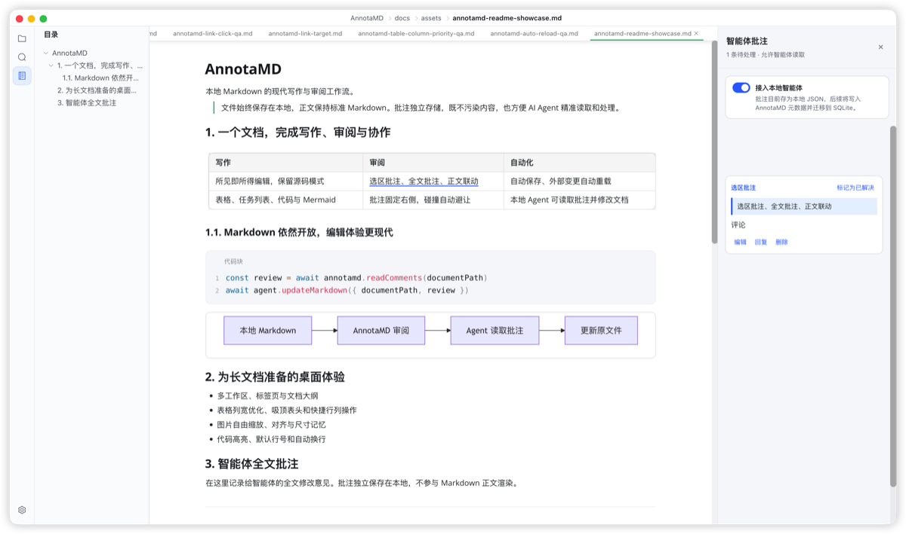

AnnotaMD
本地优先 · 所见即所得
GitHub
本地 Markdown，
也能拥有飞书式
编辑体验
所见即所得编辑、选区批注与正文联动，全部发生在开放的本地 Markdown 文件里。AI Agent 可直接读取批注并修改原文。
所见即所得快编辑
直接编辑渲染后的 Markdown，无需切换模式
面向 Agent 的批注
选区批注独立存储，不污染正文，Agent 可读取处理
完整 Markdown 能力
表格、Mermaid 图表、代码高亮、任务列表一应俱全

✏️ 所见即所得编辑
💬 选区批注联动